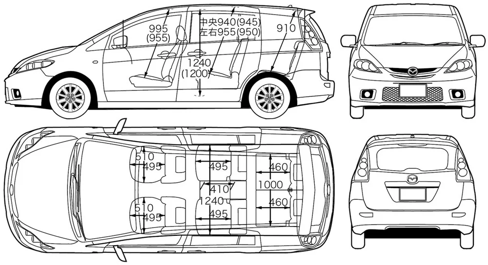
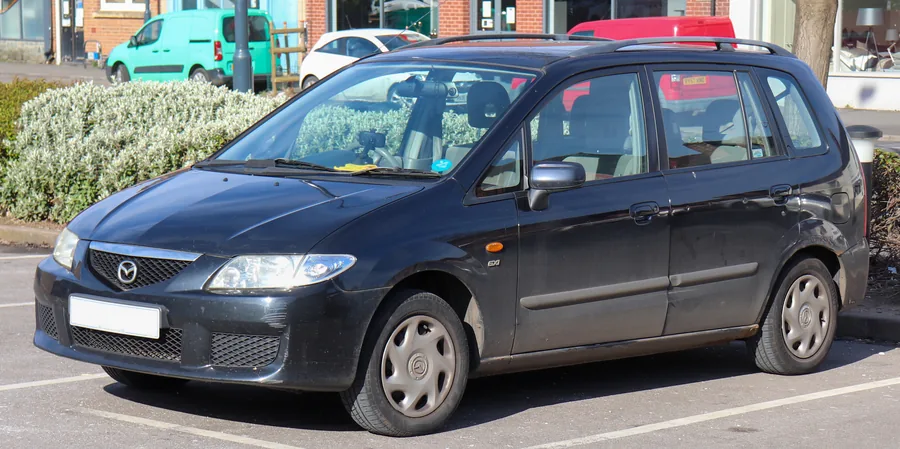
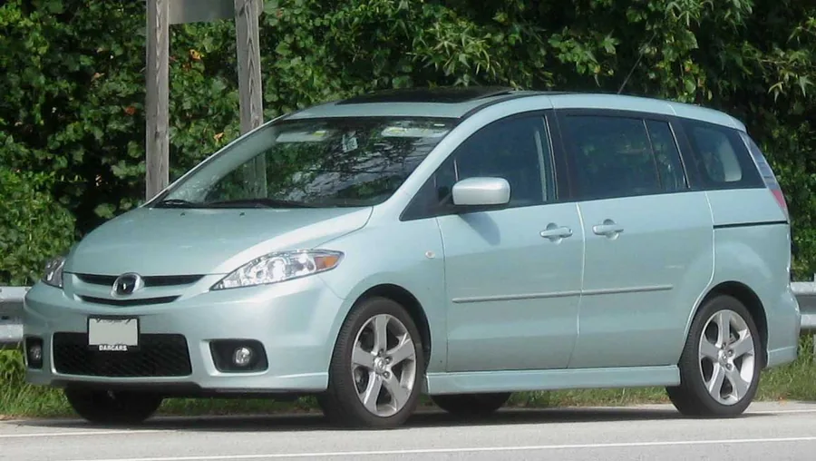
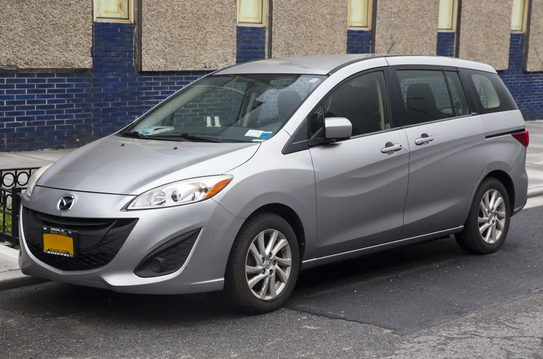

Mazda 5
Servisiramo sve generacije Mazde 5 (i prve, poznate kao Premacy), porodičnog MPV-a sa kliznim zadnjim vratima.
Servis za Mazda 5

Mazda 5 je kompaktni porodični MPV sa sedam sedišta i praktičnim kliznim zadnjim vratima. Prva generacija se kod nas prodavala kao Premacy, a kasnije kao Mazda 5 — sve tri su prolazile kroz našu radionicu.
Radimo MZR benzince i MZR-CD dizele, uključujući mehanizam kliznih vrata i specifičnosti porodičnih vozila. Redovan servis, dijagnostiku i popravke pratimo pisanim izveštajem o stanju vozila posle svake intervencije.
Generacije i motori
Radimo sve generacije modela Mazda 5 zastupljene na našem tržištu, sa fabričkim varijantama motora uz svaku.

1. generacija (CP) — Premacy · 1999–2005
Kompaktni MPV; kod nas se prodavao kao Mazda Premacy.
Motor Gorivo Zapremina Snaga 1.8 Benzin 1.839 cm³ 100–114 KS 2.0 Benzin 1.991 cm³ 131 KS 2.0 DiTD Dizel 1.998 cm³ 90–100 KS 
2. generacija (CR) · 2005–2010
MPV sa kliznim zadnjim vratima; od ove generacije ime Mazda 5.
Motor Gorivo Zapremina Snaga 1.8 MZR Benzin 1.798 cm³ 116 KS 2.0 MZR Benzin 1.999 cm³ 145–150 KS 2.0 MZR-CD Dizel 1.998 cm³ 110–143 KS 
3. generacija (CW) · 2010–2018
MPV sa kliznim zadnjim vratima i Kodo dizajnom.
Motor Gorivo Zapremina Snaga 1.8 MZR Benzin 1.798 cm³ 115 KS 2.0 MZR Benzin 1.999 cm³ 150 KS 1.6 MZ-CD Dizel 1.560 cm³ 115 KS
EU/RS ponuda motora. Snaga je okvirna, po verziji motora.
Fotografije generacija: Wikimedia Commons — Vauxford (CC BY-SA 4.0), Mr.choppers (CC BY-SA 3.0) i IFCAR (javno vlasništvo).
Na šta obraćamo pažnju
Tipične tačke održavanja i česti radovi kod ovog modela.
MZR benzinci i lanac razvoda
Kod benzinaca proveravamo lanac razvoda, bobine i svećice, jer neravnomeran rad motora najčešće počinje odatle.
MZR-CD dizel i DPF
Kod dizela pratimo regeneraciju i stanje DPF filtera, EGR ventil i sistem ubrizgavanja, česte tačke kod gradske vožnje na kratkim relacijama.
Klizna vrata i karoserija
Proveravamo mehanizam i vođice kliznih zadnjih vrata, brave i zaptivke, česta tačka održavanja kod porodičnih MPV vozila.
Trap, kočnice i elektrika
Proveravamo amortizere, spone i ležajeve, diskove i pločice, kao i alternator, akumulator i punjenje klime.
Sertifikati za Mazda 5
Mazda obuke i modelski treninzi koje su naši mehaničari prošli za ovaj model. Kliknite na sertifikat za punu veličinu.
{kind=link}
{kind=link}
{kind=link}
{kind=link}
{kind=link}
{kind=link}
{kind=link}